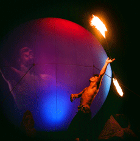
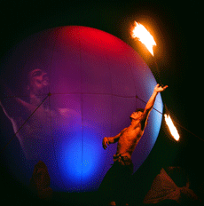

Майкл Тумблер в шоу Речников "Eclipse".
Khan Altay
Алтай, Август 2008.

фото Полины Федоровой.

Полное солнечное затмение. Алтай, 1 августа 2008 года
Шоу Речников в ночь после полного солнечного затмения. Алтай, 1августа 2008 года
В 14:58 01.08.2008 полоса полного солнечного затмения шириной около 250 км пересекла территорию России.
Мы расположились в долине реки Катунь.
50°47'20.63"С северной широты
86°29'2.51"E восточной долготы.
В 16:48 по местному времени ( в 12:48 по Москве) мы становимся очевидцами всех фаз Солнечного затмения . Продолжительность полного затмения составила 2 мин. 13 сек. при высоте Солнца над горизонтом 30'.